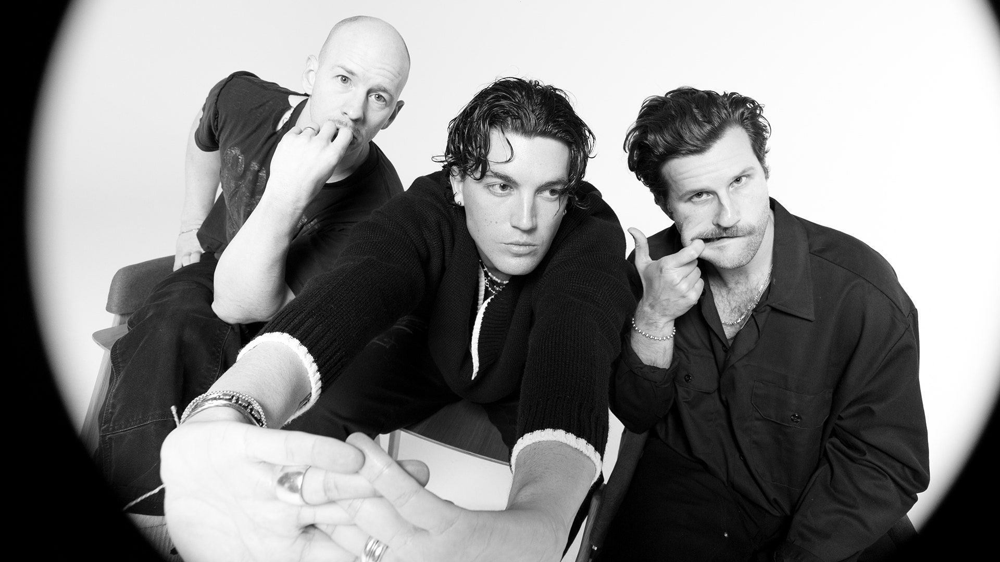
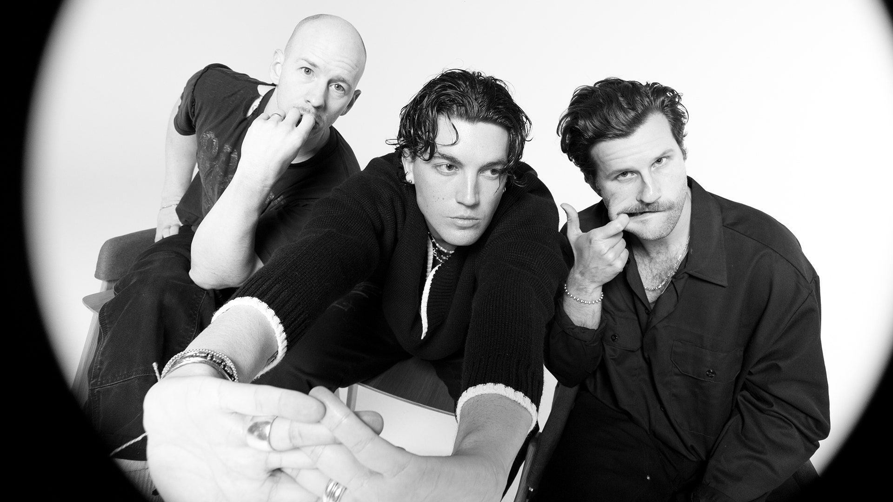

Gaming is a stress reliever, it makes me relax and enjoy my me time. Offline games like RPG teaches me life lessons, while online multiplayer games teaches me how to interact with people and to play as a team.

I watch anime because like playing video games, its how I enjoy my me time. My most favorite anime is Attack on Titan and heres why: Above all because each and every episode leads you eager to find out what happens next. AOT is the furthest thing from predictable, and so in that sense it provides a lot of excitement for me. From all the plot twist to the shocking revalations throughout the show, it leaves you craving to know more.


I want to go to Japan. I haven't been there but I dream to go there in the future. It has many tourist spots that I want to visit, I want to experience their culture, and most of all I want to experience universal studios wherein I can go to Attack on Titan Universe.

I love food, especially Japanese food. That's why I learned how to cook so that I can please myself and I enjoy it when someone appriciates my cooking.
 


I love listening to music because whenever I don't want to hear my surroundings, I just put on some headphones and start listening to music. Music also comforts me whenever I'm feeling a bit down, it also gives me good vibes.
To be honest I'm not good at playing instruments, I just happen to like music so I wanted to try playing music but it's just not my strong suit.